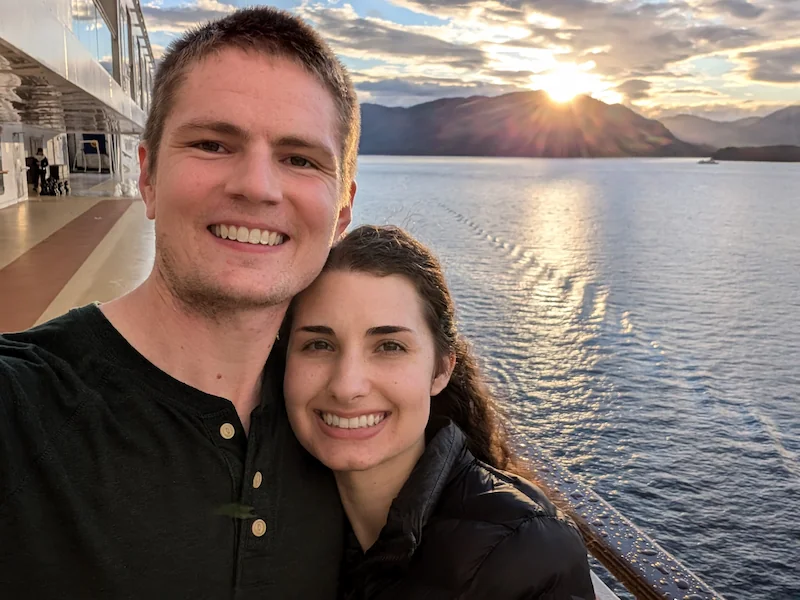

About Me
My name is Kyle. I was born in Utah, but have lived in Oregon since I was 12. Currently I live in Springfield, OR with my lovely wife and we look forward to the completion of the Willamette Valley Temple! Right now I'm working full-time as an administrative assistant at a law firm while pursuing a programming degree through BYU Pathway. I enjoy being outdoors and love to play almost any sport - but at the moment volleyball is my favorite.